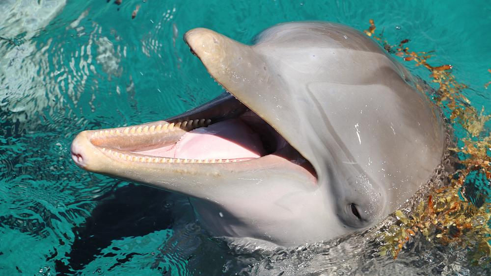

Dolphins
Nature's True Mystery
Contents
- Entymology
- Taxonomy
- Evolution
- Anatomy
Etymology
The Evolution of Cetaceans
Taxonomy
Do you think they can even be classified?
Evil like this can't even have a name
Evolution
Literally Like a Pokemon
Anatomy
Integumentary System
See, doesn't that sound made up? I mean listen to that word, intengumentary... Is that even pronouncable? I mean if you were to go and make a fake ass little name for your fake ass animal you think they'd end up calling it something a little more plausibe.
Blubber

They are fat, nasty little things
CLICK HERE for more dolphin facts